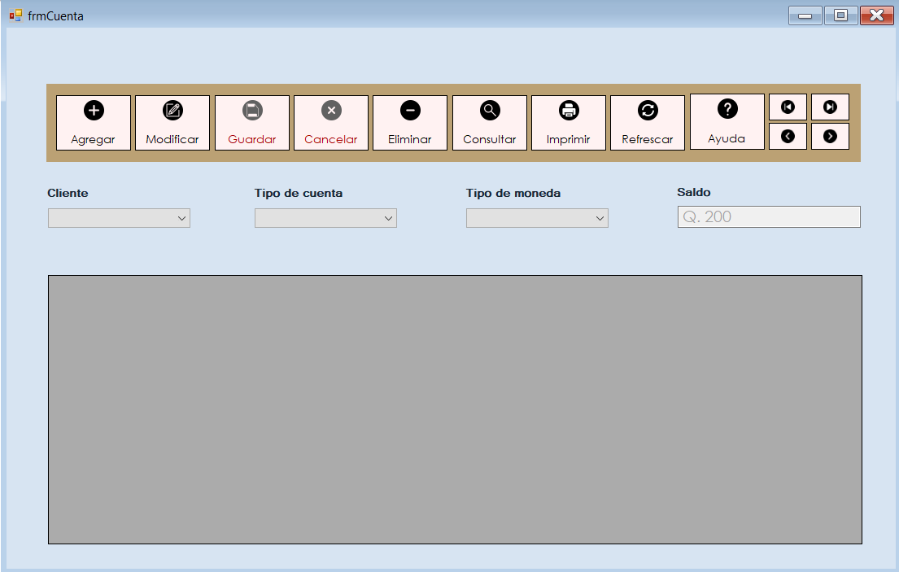
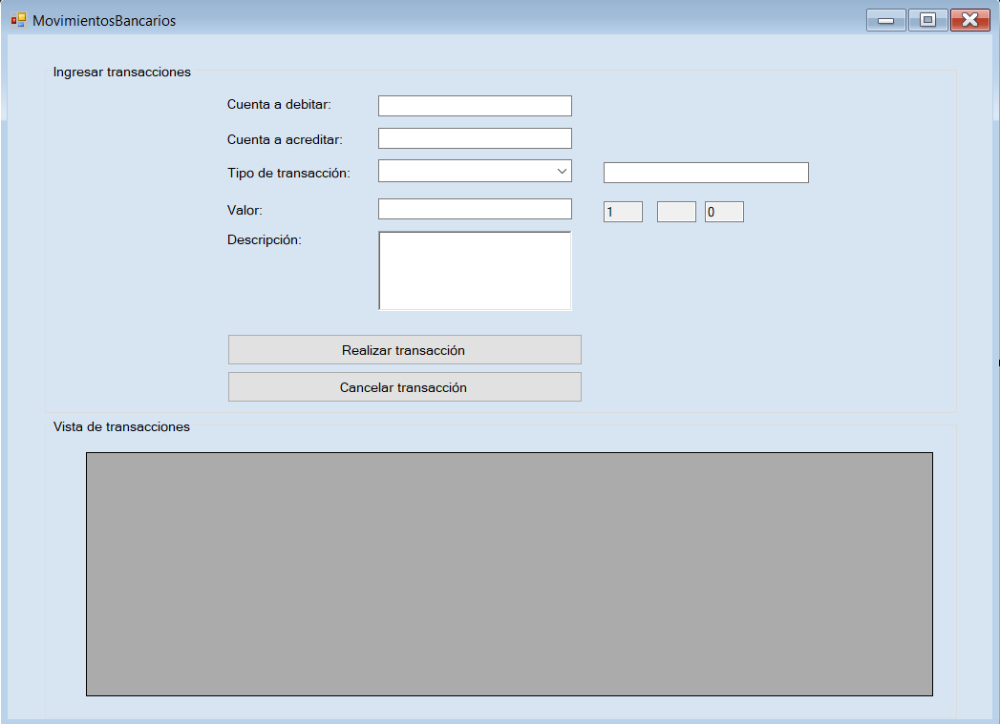

Permite la creación de nuevas cuentas en el sistema bancario, permite el acceso gracias a la solicitud de las variables puestas en pantalla. Guardará un registro con la información personal del cliente.
Guarda un historial de todas las acciones realizadas por el cliente para garantizar la seguridad de las operaciones, ademas servirá de guía para determinar el tipo de cliente relacionado con el banco.
Realiza pagos de los servicios de la empresa seleccionada por el banco, indique su número de cliente para la busqueda de todas las facturas pendientes de pago, seleccione las facturas que desea pagar para entregar la información al banco, verifique su número de cuenta y realice la transacción en credito o debito.

Sección para realizar transacciones entre cuentas, indicando la cuenta origen y destino, así como de cuanto será el valor a compartir.
